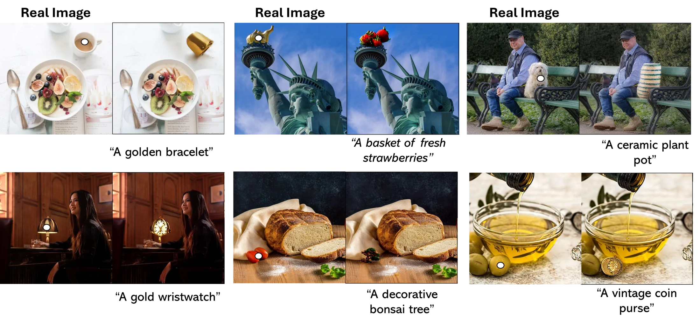
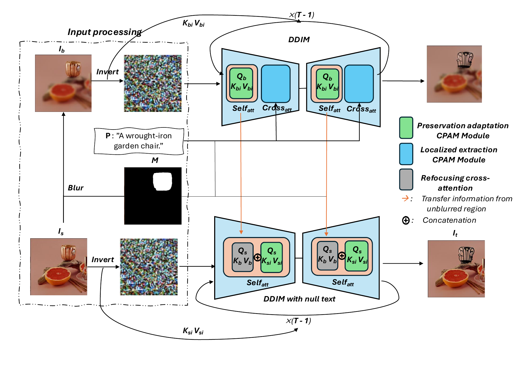
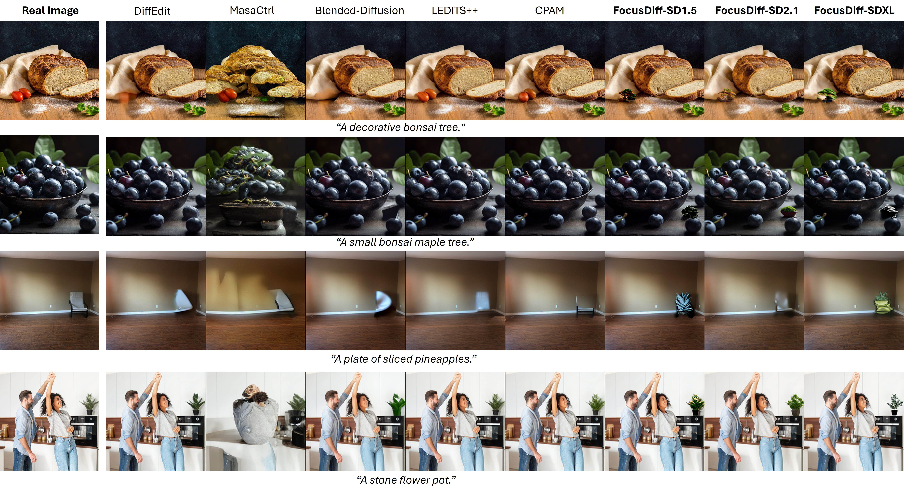
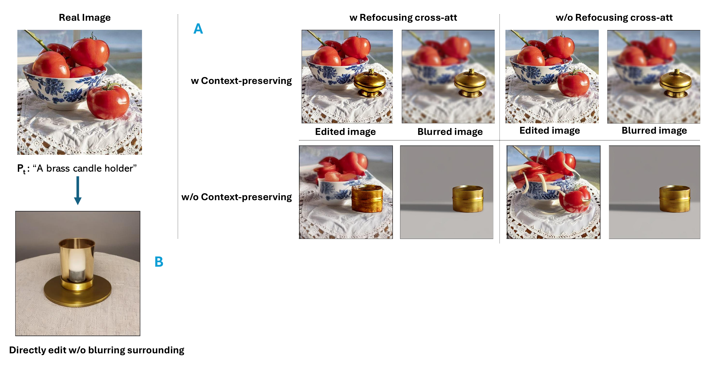
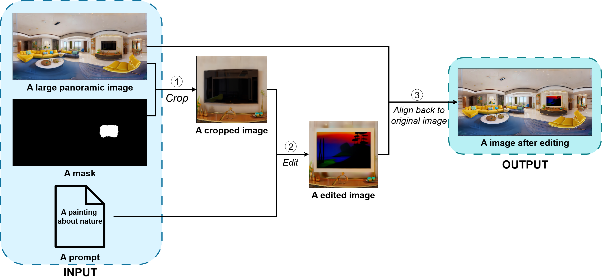
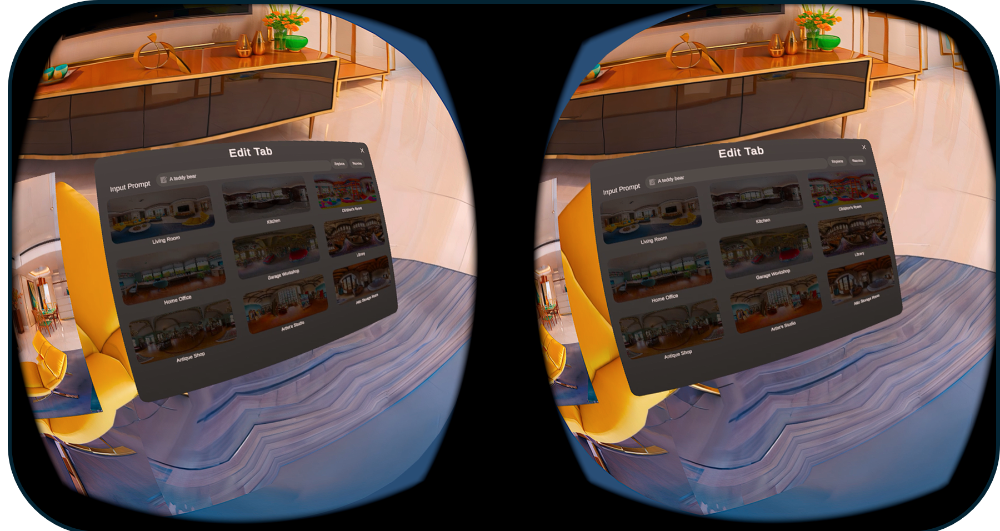
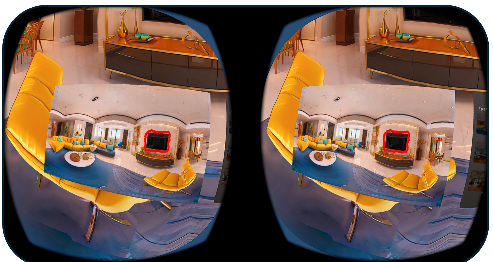
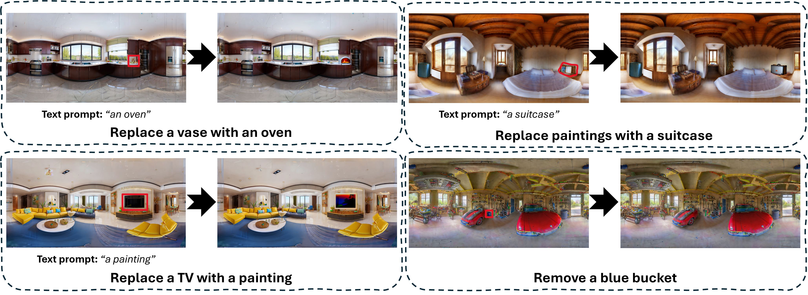
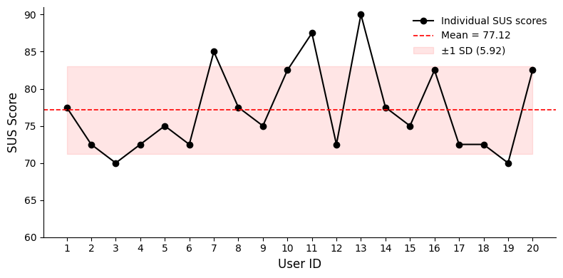

Refocusing Cross-Attention
Selectively blurs non-target areas so diffusion attention concentrates on the masked object, then transfers the edited object semantics back into the target latent flow.
1University of Science, Ho Chi Minh, Vietnam
2Vietnam National University, Ho Chi Minh, Vietnam
3University of Dayton, Ohio, United States
{vdkhoi,lhnthanh,hvtham}@selab.hcmus.edu.vn, tamnguyen@udayton.edu, {tmtriet,ltnghia}@fit.hcmus.edu.vn

Zero-shot text-guided diffusion has significantly advanced image editing; however, practical usability remains constrained by prompt brittleness, spillover edits, and failures on small or cluttered objects. We propose FocusDiff, a tuning-free framework for precise region-specific image manipulation based on refocusing cross-attention. Given a target region obtained through automated segmentation or manual selection, FocusDiff applies selective blurring to non-edit areas to guide attention toward the masked region while transferring object identity, structure, and appearance to the edited output. Context-preserving modules further ensure background fidelity and global coherence. We also extend FocusDiff to 360-degree indoor panorama editing and demonstrate its effectiveness within virtual reality environments.
FocusDiff edits an input image Is using a source object mask M and a target prompt P. The image is processed in original and blurred latent flows. During denoising, refocusing cross-attention extracts object semantics from the blurred branch and transfers them to the edited branch, while CPAM-style context-preserving modules stabilize the unmasked background.

Selectively blurs non-target areas so diffusion attention concentrates on the masked object, then transfers the edited object semantics back into the target latent flow.
Reuses intermediate self-attention and localized extraction modules to preserve non-edited regions and suppress prompt leakage outside the mask.
Crops a region of interest from a 360-degree panorama, edits it locally, then aligns the edited patch back to the panorama for immersive VR workflows.
Competing zero-shot localized editors often fail to modify small or specific objects, or introduce unintended background changes. FocusDiff produces fine-grained local edits with faithful background preservation.

We evaluate on LIMB using CLIPScore for text-image alignment and LPIPS for background preservation. The SD2.1 and SDXL variants demonstrate FocusDiff's generality across diffusion backbones.
| Method | CLIPScore ↑ | LPIPS ↓ |
|---|---|---|
| MasaCtrl | 20.12 | 0.280 |
| Blended-Diffusion | 27.43 | 0.156 |
| DiffEdit | 27.75 | 0.148 |
| LEDITS++ | 32.76 | 0.103 |
| CPAM | 33.45 | 0.101 |
| FocusDiff-SD1.5 (Ours) | 35.85 | 0.099 |
| FocusDiff-SD2.1 (Ours) | 35.61 | 0.068 |
| FocusDiff-SDXL (Ours) | 36.48 | 0.064 |

| Configuration | CLIPScore ↑ | LPIPS ↓ |
|---|---|---|
| FocusDiff-SD1.5 (Full Framework) | 35.85 | 0.099 |
| FocusDiff w/o RCA | 31.42 | 0.145 |
| FocusDiff w/o CPI | 36.12 | 0.284 |
| Baseline w/o Blurring Surrounding | 29.80 | 0.312 |
FocusDiff extends naturally to indoor panoramic images by cropping the target region, editing it locally, and blending it back into the full panorama. The VR interface supports mask drawing, object replacement, object removal, and preview inside an immersive scene.




LIMB is a localized image manipulation benchmark curated from PIE-Bench for fine-grained region-specific editing. It contains multi-object scenes and annotations designed to evaluate whether a method edits the requested target while preserving the rest of the image.
The VR panoramic editing system obtains an overall System Usability Scale score of 77.12/100, indicating strong usability for interactive object replacement and removal tasks.

This research is funded by Vietnam National University - Ho Chi Minh City (VNU-HCM) under Grant Number B2026-18-17. Experiments were conducted on NVIDIA A100 GPU resources.
We thank all participants who joined the VR-based panoramic editing user study and provided valuable feedback on object replacement, object removal, and system usability.
This project page follows the academic layout style of CPAM and related diffusion-editing project pages, with a FocusDiff-specific visual identity and paper assets.
@inproceedings{vo2026focusdiff,
title = {Toward 360-Degree Indoor Panorama Editing via Tuning-Free Diffusion Model with Refocusing Cross-Attention},
author = {Vo, Dinh-Khoi and Le-Hinh, Nhut-Thanh and Huynh, Viet-Tham and Nguyen, Tam V. and Tran, Minh-Triet and Le, Trung-Nghia},
booktitle = {International Conference on Computational Collective Intelligence},
year = {2026},
url = {https://arxiv.org/abs/2606.14035}
}